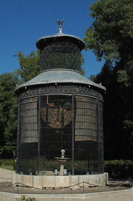
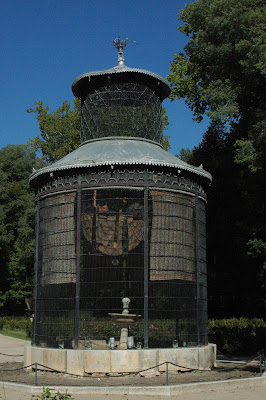

¡Hola pequeños aventureros! Hoy les voy a contar sobre un lugar muy especial llamado la pajarera, que vive en los mágicos jardines de Aranjuez.
¡Prepárense para un viaje en el tiempo!
Hace muchos, muchos años y allá por el cambio de siglo XIX-XX.
La pajarera, de estilo ecleticista, era y lo sigue siendo, no sólo una obra de arte, ¡sino también un testigo del pasado!
Además la pajarera se considera un regalo más para todos los visitantes. Por la sencilla razón de que en aquellos tiempos, los jardines de Aranjuez eran el lugar donde los reyes y reinas de España paseaban y disfrutaban de la naturaleza.
Por otra parte en la pajarera, la estructura metalica con el que está construida, no solo es lo unico bonito, sino tambien las especies de pájaros que la habitan. Los sonidos que emiten estas especies de pajaros crean un ambiente muy hermoso y solo a unos pasos de un río cercano llamado el Tajo. ¿Pueden imaginar el viaje que hace el escuchar y ver estas especies y ver lo bien que conviven entre ellas?. Es como si la naturaleza misma estuviera contando una historia.
Por otro lado, a lo largo de los años, la pajarera ha visto pasar muchos días soleados y algunos días lluviosos, pero siempre ha mantenido su encanto y magia. Así que, cuando visiten los jardines de Aranjuez, saluden a las especies de pajaros que la habitan y agradezcanlas por la bella mision que cumplen tanto tiempo, de alegrarn@s el alma con sus sonidos tan puros y naturales. Ahora ustedes también son parte de la historia de la pajarera.
¡Así que diviértanse explorando y descubriendo los secretos que los jardines de Aranjuez tienen todavia para contarles!
¡Hasta la próxima aventura en el tiempo, pequeños exploradores!

 
